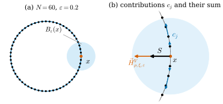
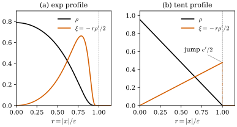

47.1 Problem and Key Idea
Goals
- 논문이 푸는 문제, 곧 point cloud나 voxel처럼 넓이도 tangent plane도 주어지지 않은 데이터에서 mean curvature를 정의하고 계산하는 문제를 말하고, 논문이 정리한 기존 방법의 한계를 설명할 수 있다.
- 핵심 아이디어, 곧 first variation과 mass를 서로 다른 kernel로 흐린 뒤 비를 취한다는 것을 그림으로 설명하고, scale \(\varepsilon\)이 무엇인지 말할 수 있다.
- 논문 §1의 kernel 가정(\(\rho \in C^1\), \(\xi \in C^0\), \(\R^n\)에서의 정규화)을 정확히 쓰고, exp와 tent profile이 그 가정을 만족하는지 판정할 수 있다.
- 이 장의 기호가 Chapter 46과 이 study set의 규약과 어떻게 대응하는지 안다.
Prerequisites
- Section 46.4: varifold(Definition 46.4.1), mass(Definition 46.4.2), point cloud varifold(Definition 46.4.6)
- Section 46.5: first variation(Definition 46.5.1), generalized mean curvature(Definition 46.5.4), point cloud의 first variation이 measure가 아니라는 것(Exercise 46.5.4)
- Section 46.7: convolution(Definition 46.7.1), 상수 \(C_\rho\)(Proposition 46.7.2), smoothed first variation(Proposition 46.7.4)
- 논문별 기호표(Table 46.9.2)
Motivation
Chapter 46은 네 논문을 읽을 낱말을 모두 정의하고, 마지막에 [BLM17]을 절마다 읽겠다고 예고했다. 출발점은 Exercise 46.5.4의 사실이다. point cloud varifold의 first variation은 vector field \(X\)의 도함수를 점에서 읽으므로 measure가 아니다. 그래서 smooth surface에서 mean curvature를 얻던 분해 \(\delta V = -\vec H\norm{V} + \delta V_s\)((46.5.5))를 쓸 수 없다. 이 논문은 바로 이 문제를 푼다. 이 절은 논문의 Introduction과 §1을 읽는다. 논문이 무엇을 문제로 보는지, 그 해법의 핵심이 무엇인지, 해법에 쓰이는 kernel에 어떤 가정을 두는지다.
The Problem
논문은 모양을 이산적으로 나타내는 방법(polygonal·polyhedral mesh, level set, pixel·voxel, point cloud, spline, CAD)을 두 부류로 나눈다. structured 표현은 차원과 topology 정보를 직접 담는다(mesh, level set). unstructured 표현은 spatial distribution만 담는다(point cloud, pixel·voxel). 측정 장비가 만드는 데이터는 대부분 unstructured이고, 그 데이터에서 기하 정보를 뽑는 가장 중요한 과제 가운데 하나가 curvature의 복원이라는 것이 논문의 문제의식이다.
논문이 정리한 기존 방법은 세 갈래다. 아래는 논문의 정리이고 평가도 논문의 것이다.
- 국소 회귀: point cloud에 국소적으로 smooth surface를 맞추고 그 curvature를 계산한다. Moving Least Squares(MLS, Levin 1998)와 그 변형들이다.
- integral invariant: 작은 ball 안의 넓이, 부피, covariance 같은 적분으로 정의된 양의 점근 전개에서 curvature를 읽는다(point cloud, digital shape, noise에 대한 강건성까지 연구되었다).
- normal cycle: offset에서 curvature measure를 복원한다(Cohen-Steiner–Morvan, Chazal 등). geometric measure theory에 기반해 일반적이고 singular part도 허용하지만, triangle mesh에서 효율적으로 개발되었고 point cloud로 옮기기는 쉽지 않다.
논문은 앞의 두 갈래의 공통 약점으로 두 가지를 든다. singular point(모서리, 교차, junction)에서 curvature를 복원하기에 맞지 않고, 수렴 결과가 강한 regularity 가정 아래에서만 얻어진다는 것이다. 그리고 varifold가 이 둘을 해결할 후보라고 본다. varifold는 Almgren이 넓이 범함수의 critical point와 비누막을 연구하려고 도입한 것으로 [Almgren65], compactness, mass의 연속성, rectifiability 판정, first variation으로 정의된 generalized mean curvature 같은 좋은 성질이 있다(Chapter 46). 그런데도 이산 기하와 영상 처리에 거의 쓰이지 않았는데(논문이 드는 예외는 Charon–Trouvé의 shape 비교 [CharonTrouve13]), 논문은 그 이유를 이론이 매우 기술적이고 이산 근사를 위해 만들어지지 않았다는 데서 찾는다.
그래서 논문의 목표는 varifold로 연속 대상뿐 아니라 이산 대상(point cloud, pixel·voxel surface, polyhedral mesh)도 나타내고 분석하는 것이다. 이산 대상에 붙인 varifold를 논문은 discrete varifold라 부른다(Section 47.2). 이것을 쓸모 있게 만들려면 고전 이론을 근사 결과, compactness, curvature 개념의 세 방향으로 넓혀야 한다는 것이 논문의 말이다. 이 세 방향이 이 장의 Section 47.6, Section 47.3, Section 47.4다.
The Key Idea
smooth surface의 varifold \(V\)에서 generalized mean curvature는 first variation의 \(\norm{V}\)에 대한 density다. (46.5.5)에서 singular part를 빼면 \(\vec H = -\delta V/\norm{V}\)로, 곧 “first variation을 mass로 나눈 것”이다. point cloud에서는 분자 \(\delta V\)가 measure가 아니고 분모 \(\norm{V}\)는 점에 모인 Dirac mass라 이 나눗셈이 뜻을 갖지 않는다. 논문의 아이디어는 둘을 따로 흐리는 것이다.
- first variation을 kernel \(\rho_\varepsilon\)로 흐린다. \(\delta V*\rho_\varepsilon\)은 언제나 연속 vector field다(Proposition 46.7.4, 논문의 Definition 3.1과 Proposition 3.2).
- mass를 다른 kernel \(\xi_\varepsilon\)로 흐린다. \(\norm{V}*\xi_\varepsilon\)은 연속 함수다(Definition 46.7.1).
- 둘의 비에 상수 \(-C_\xi/C_\rho\)를 곱한다. 이것이 approximate mean curvature \(\vec H^V_{\rho,\xi,\varepsilon}\)이고, Definition 47.4.1에서 정확히 정의한다.
\(\rho_\varepsilon\)와 \(\xi_\varepsilon\)이 고정된 두 kernel을 \(\varepsilon\)배로 줄인 것이면, \(\varepsilon\)은 mean curvature를 재는 scale이다. 반지름 \(\varepsilon\)의 ball 안의 데이터만 보고 curvature를 정한다. 논문은 varifold와 그 first variation을 convolution하는 것 자체는 새롭지 않다고 밝힌다. Brakke가 mean curvature flow를 구성할 때 기술적 도구로 썼다 [Brakke78]. 논문이 새롭다고 주장하는 것은 mass와 first variation을 둘 다 regularize해서 그 비로 모든 varifold에 일관된 mean curvature를 준다는 단순한 생각이다.
Figure 47.1.1이 point cloud에서 이 식이 무엇을 하는지 보여 준다. (a)는 반지름 \(0.5\)인 circle 위의 점 \(60\)개다. 점마다 짧은 파란 선분이 그 점의 plane(tangent line) \(P_j\)이고, 하늘색 disk가 \(x = (0.5, 0)\) 중심의 ball \(B_\varepsilon(x)\)(\(\varepsilon = 0.2\))이다. ball 안에 \(x\)의 이웃이 위아래로 셋씩 있다. (b)는 그 ball을 확대한 것이다. 이웃 \(x_j\)마다 파란 화살표 \(c_j = m_j\big(-\rho'(\abs{x_j - x}/\varepsilon)\big)P_j\frac{x_j - x}{\abs{x_j - x}}\)를 그렸다. kernel의 기울기를 그 점의 tangent line에 정사영한 것이고, \(\delta V*\rho_\varepsilon(x)\)의 항 하나에 음의 상수를 곱한 것이다((46.7.4)). 그림은 정규화 전의 profile \(e^{-1/(1 - r^2)}\)을 쓰는데, \(\rho\)나 \(\xi\)에 상수를 곱해도 상수 \(C_\rho\), \(C_\xi\)가 같은 배로 변하므로 \(\vec H^V_{\rho,\xi,\varepsilon}\)은 그대로다. 화살표는 대부분 circle을 따라 \(x\)에서 멀어지는 방향이고, 위아래 이웃의 화살표는 그 성분이 서로 상쇄된다. 남는 것은 circle이 휜 만큼 생기는 안쪽 성분뿐이다. 그 합 \(S\)(검정)가 circle의 중심을 향한다. 이것을 흐린 mass로 나누고 상수를 곱한 \(\vec H^V_{\rho,\xi,\varepsilon}(x)\)(주홍)의 길이는 \(1.961\)이고, 정답 \(\abs{\vec H} = 1/0.5 = 2\)에 가깝다. 이웃이 여섯 개뿐인데도 \(2\%\) 안이다. 왜 이렇게 정확한지는 kernel의 선택에 달렸고, 그것이 Section 47.5의 주제다.

Verification: verify/v-47-1-problem-key-idea.py
(47.1.1)에는 smooth surface에 대한 어떤 가정도 들어 있지 않다. 그래서 point cloud, voxel, mesh, singular point가 있는 surface 모두에서 같은 식을 쓸 수 있다. 질문은 이 값이 언제, 얼마나 빠르게 진짜 mean curvature에 다가가는가이다. 논문의 정리들(Section 47.4)이 그 답이다.
What the Paper Claims
논문 Introduction이 밝힌 기여를 논문의 말 순서대로 정리한다. 이것은 논문의 주장이고, 근거가 충분한지는 Section 47.8에서 따진다.
- 이산 데이터(point cloud, voxel, polyhedral)를 discrete varifold라는 하나의 framework로 나타내고, volumetric과 point cloud 표현 사이를 오가는 값이 bounded Lipschitz distance로 얼마인지 보인다(Proposition 2.13, Section 47.2).
- regularized first variation \(\delta V*\rho_\varepsilon\)을 정의하고(Definition 3.1), 그 \(L^1\) norm이 고르게 bounded인 varifold의 열에 대한 Allard형 compactness와 rectifiability 정리를 증명한다(Theorem 3.6, Section 47.3).
- 모든 varifold에 approximate mean curvature를 정의하고(Definition 4.1), 세 수렴 정리를 증명한다. rectifiable varifold에서 거의 모든 점의 수렴(Theorem 4.3), 근사 varifold의 열에 대한 \((d_i + \abs{x - z_i})/\varepsilon_i^2\) 꼴의 오차 bound(Theorem 4.5), normal 방향으로 정사영한 판에 대한 \((d_{1,i} + d_{2,i} + \abs{x - z_i})/\varepsilon_i\) 꼴의 bound(Theorem 4.8)다(Section 47.4).
- kernel 쌍을 고르는 기준으로 natural kernel pair \(\xi(s) = -s\rho'(s)/n\)을 제안하고 Taylor 전개로 동기를 준다(Definition 5.1, Section 47.5). 수렴 속도가 나아진다는 증명은 없지만, 모든 수치 실험에서 수렴과 안정성이 크게 좋아졌다고 말한다.
- rectifiable varifold를 volumetric 또는 point cloud varifold로 근사하고, piecewise \(C^{1,\beta}\)이면 거리가 cell 크기 \(\delta_i\)의 \(\delta_i^\beta\) 정도라는 것을 보인다(Theorem 6.4, Section 47.6).
- mesh의 고전적인 cotangent formula가 polyhedral varifold의 first variation을 vertex의 hat function에 쓴 값이라는 것을 보인다(Proposition 7.1, Section 47.6). 논문의 말로, cotangent formula는 \(\delta V\)를 piecewise affine kernel들로 regularize한 것이다.
- 2D와 3D point cloud의 수치 실험으로, 구현이 쉽고, 이론이 예측한 것보다 빠르게 수렴하며, 교차와 junction 같은 singular point가 있어도 일관된 값을 준다고 말한다(§8, Section 47.7). 논문은 또 이 수렴 정리들로 Willmore형 범함수의 \(\Gamma\)-convergence를 보일 수 있고 그것을 후속 논문에서 다루겠다고 예고하지만, 이 논문에는 그 결과가 없다.
Kernels (Section 1 of the Paper)
논문 §1은 기호를 정하고 kernel에 가정을 둔다. 기호는 대부분 Chapter 46과 같다. 차이가 나거나 새로 나오는 것은 아래 Conventions 상자에 모았다. 실질적인 내용은 kernel이다.
Definition 47.1.1 (kernel pair). \(1 \le d \lt n\)이라 하자. 짝함수 \(\rho, \xi\colon\R \to [0, \infty)\)가 \([-1, 1]\) 밖에서 \(0\)이고 \(\rho \in C^1(\R)\), \(\xi \in C^0(\R)\)이며 \[ n\omega_n\int_0^1\rho(t)\,t^{n-1}\,dt = n\omega_n\int_0^1\xi(t)\,t^{n-1}\,dt = 1 \] 일 때, \((\rho, \xi)\)를 kernel pair(커널 쌍)라 하고 \(\rho\), \(\xi\)를 그 profile이라 한다. \(\omega_n\)은 \(\R^n\)의 unit ball의 부피다. 이때 radial kernel \(\rho_1(x) = \rho(\abs{x})\), \(\xi_1(x) = \xi(\abs{x})\)은 \(\R^n\)에서 적분이 \(1\)이고, \(\varepsilon \gt 0\)에 대해 \[ \rho_\varepsilon(x) = \varepsilon^{-n}\rho_1(x/\varepsilon), \qquad \xi_\varepsilon(x) = \varepsilon^{-n}\xi_1(x/\varepsilon) \] 로 줄인 kernel도 적분이 \(1\)이다. [BLM17, §1]
정규화 조건은 “\(\R^n\)에서 적분이 \(1\)”을 polar coordinates로 쓴 것이다(반지름 \(t\)인 sphere의 넓이가 \(n\omega_nt^{n-1}\)). (46.7.1)의 kernel이 바로 \(\rho_\varepsilon\)이다. 논문은 뒤에서(§4) 더 강한 가정 \(\rho \in W^{2,\infty}\), \(\xi \in W^{1,\infty}\)을 더한다(Hypothesis 1, Definition 47.4.6).
Example 47.1.2 (the exp and tent profiles). 논문의 수치 실험(§8.1.1)은 \([0, 1]\) 위의 두 profile과 그 짝을 쓴다.
- exp: \(\rho_{\exp}(r) = c\,e^{-1/(1 - r^2)}\)(\(\abs{r} \lt 1\)), 밖에서 \(0\). 모든 도함수가 \(r \to 1\)에서 \(0\)으로 가므로 \(C^\infty\)다. \(n = 2\)에서 정규화 상수는 \(c = 2.1436\)이다.
- natural exp: \(\xi_{\exp}(r) = -r\rho'_{\exp}(r)/n\). 역시 \(C^\infty\)이고, \(r = 0\)에서 \(0\)이다.
- tent: \(\rho_{\mathrm{tent}}(r) = c'(1 - r)\)(\(0 \le r \lt 1\)). \(n = 2\)에서 \(2\pi c'\int_0^1(1 - t)t\,dt = \pi c'/3 = 1\)이므로 \(c' = 3/\pi = 0.9549\)다.
- natural tent: \(\xi_{\mathrm{tent}}(r) = -r\rho'_{\mathrm{tent}}(r)/n = c'r/n\)(\(0 \le r \lt 1\)), 밖에서 \(0\).
“exp”와 “tent”라는 이름의 쌍은 \((\rho, \rho)\), 곧 분모에도 같은 profile을 쓰는 쌍이고, “natural”이 붙은 쌍은 \((\rho, -r\rho'/n)\)이다. 두 natural 짝은 \(\rho\)와 같은 상수로 정규화된다(Proposition 47.5.2에서 증명한다). \(d = 1\)일 때 \(C_\rho = \int_{\R}\rho(\abs{z})\,dz\)는 정규화된 exp에서 \(0.9517\)(Proposition 46.7.2), natural exp에서 그 절반인 \(0.4759\), tent에서 \(c' = 0.9549\), natural tent에서 \(c'/2 = 0.4775\)이다.
Verification: verify/v-47-1-problem-key-idea.py
Figure 47.1.2는 \(n = 2\)에서 정규화한 네 profile이다. (a)의 검은 곡선 \(\rho_{\exp}\)는 \(r = 0\)에서 가장 높고 \(r = 1\)로 가며 매끄럽게 \(0\)이 된다. 주홍 곡선 \(\xi_{\exp}\)는 반대로 \(r = 0\)에서 \(0\)이고 \(r \approx 0.8\)에서 가장 크다. 분모의 kernel이 가운데보다 가장자리의 이웃에 무게를 둔다는 뜻이다. (b)의 tent에서는 \(\rho\)가 꺾인 직선이고, natural 짝 \(\xi\)는 \(r = 1\)에서 \(c'/2\)만큼 뛴다(주홍 점선).

Non-example 47.1.3 (the tent pairs are outside the assumptions). tent profile은 Definition 47.1.1의 최소 가정도 만족하지 않는다. radial kernel \(\rho_1(x) = c'(1 - \abs{x})\)는 원점에서 cone처럼 뾰족해서 미분할 수 없다(\(\rho'_{\mathrm{tent}}(0) = -c' \ne 0\)이므로 짝함수로 늘린 \(\rho\)가 \(0\)에서 꺾인다). \(\abs{x} = 1\)에서도 꺾인다. 곧 \(\rho_{\mathrm{tent}} \notin C^1(\R)\)이고 Lipschitz일 뿐이다. natural tent의 \(\xi_{\mathrm{tent}}\)는 \(r = 1\)에서 뛰므로 연속도 아니다. 논문도 이것을 밝히고(“\(\rho_{\mathrm{tent}}\)는 \(W^{1,\infty}\)일 뿐이고 \(\xi_{\mathrm{tent}}\)는 연속도 아니다”), 그래도 실험에 쓴다. 그 결과가 natural exp만큼 좋다는 것이 Section 47.7의 관찰 가운데 하나다.
Remark 47.1.4 (why two kernels and why the constant). 두 kernel에 다른 regularity를 요구하는 이유는 쓰임이 다르기 때문이다. \(\rho_\varepsilon\)은 first variation에 들어가는데, first variation은 test vector field의 도함수를 쓰므로 \(\delta V*\rho_\varepsilon\)의 식에 \(\nabla\rho_\varepsilon\)이 나온다((46.7.4)). 그래서 \(\rho\)는 미분할 수 있어야 한다. \(\xi_\varepsilon\)은 mass에 들어가고 미분되지 않으므로 연속이면 된다. 상수 \(C_\xi/C_\rho\)가 필요한 이유는 Proposition 46.7.2(c)에 있다. kernel을 \(\R^n\)에서 정규화했으므로 \(d\)차원 surface 위에서는 \(\varepsilon^{n-d}\norm{V}*\rho_\varepsilon \to C_\rho\theta\)처럼 상수 \(C_\rho = d\omega_d\int_0^1\rho(r)r^{d-1}\,dr\)가 남는다. 분자와 분모에 다른 kernel을 쓰면 두 상수가 다르므로 그 비를 보정해야 한다. 논문은 이 상수를 §4의 (4.1)에서 정의한다((47.4.1)).
Summary
- 논문의 문제는 넓이도 tangent plane도 없는 이산 데이터, 특히 unstructured 데이터(point cloud, voxel)에서 mean curvature를 정의하고 계산하는 것이다. 논문은 기존 방법이 singular point에서 약하고 강한 regularity를 요구한다고 보고 varifold를 쓴다.
- 핵심 아이디어는 \(\vec H = -\delta V/\norm{V}\)의 분자와 분모를 서로 다른 kernel \(\rho_\varepsilon\), \(\xi_\varepsilon\)로 흐리고 상수 \(C_\xi/C_\rho\)를 곱하는 것이다((47.1.1)). \(\varepsilon\)은 curvature를 재는 scale이고, 식은 모든 varifold에서 뜻을 갖는다(Figure 47.1.1).
- kernel pair는 \([-1, 1]\) 밖에서 \(0\)인 짝함수 \(\rho \in C^1\), \(\xi \in C^0\)이고 \(\R^n\)에서 정규화한다(Definition 47.1.1). exp profile은 가정을 만족하고 tent profile은 만족하지 않는다(Example 47.1.2, Non-example 47.1.3).
- 논문의 \(H\)는 principal curvature의 합 규약이고, 이 장은 그것을 \(\vec H = 2H\mathbf{N}\)로 쓴다(Conventions 상자).
다음 절에서는 논문 §2를 읽는다. Chapter 46의 정의를 상기하고, 논문의 discrete varifold 세 종류(volumetric, point cloud, polyhedral)와 그 사이를 오가는 값, 그리고 discrete varifold의 first variation이 왜 쓸 수 없는 대상인지를 본다.
Quick check
Exercise 47.1.1 ★ tent profile \(1 - r\)을 \(\R^2\)와 \(\R^3\)에서 정규화하는 상수 \(c'\)을 각각 구하여라.
Solution
\(\R^2\)에서 \(n\omega_n = 2\pi\)이고 \(\int_0^1(1 - t)t\,dt = \tfrac16\)이므로 \(c' = 1/(2\pi/6) = 3/\pi = 0.9549\)이다. \(\R^3\)에서 \(n\omega_n = 3\cdot\tfrac{4\pi}{3} = 4\pi\)이고 \(\int_0^1(1 - t)t^2\,dt = \tfrac13 - \tfrac14 = \tfrac1{12}\)이므로 \(c' = 1/(4\pi/12) = 3/\pi\)이다. 우연히 같은 값이다.
Verification: verify/v-47-1-problem-key-idea.py
Exercise 47.1.2 ★ \(n = 2\), \(d = 1\)에서 정규화한 tent pair \((\rho_{\mathrm{tent}}, \rho_{\mathrm{tent}})\)와 natural tent pair \((\rho_{\mathrm{tent}}, \xi_{\mathrm{tent}})\)의 상수 비 \(C_\xi/C_\rho\)를 구하여라.
Solution
\(d = 1\)이면 \(C_f = d\omega_d\int_0^1f(r)\,dr = 2\int_0^1f(r)\,dr\)이다. \(C_{\rho} = 2c'\int_0^1(1 - r)\,dr = c'\), \(C_{\xi} = 2\int_0^1c'r/2\,dr = c'/2\)이다. 따라서 tent pair에서는 \(C_\rho/C_\rho = 1\), natural tent pair에서는 \(C_\xi/C_\rho = \tfrac12\)이다. 이 \(\tfrac12 = d/n\)은 우연이 아니다(Proposition 47.5.2).
Verification: verify/v-47-1-problem-key-idea.py
Exercise 47.1.3 ★ point cloud에서 반지름 \(\varepsilon\)의 ball \(B_\varepsilon(x)\)에 \(x\) 자신밖에 없으면 (47.1.1)은 어떻게 되는가? exp pair와 natural exp pair를 나누어 답하여라.
Solution
분자 \(\delta V*\rho_\varepsilon(x)\)에는 \(x\) 자신의 항 \(m\,P\nabla\rho_\varepsilon(0) = 0\)뿐이므로 \(0\)이다(Exercise 46.7.5). exp pair에서는 분모가 \(m\varepsilon^{-n}\rho(0) \gt 0\)이므로 \(\vec H^V = 0\)이다. 곡선이 휘어 있어도 \(0\)을 돌려준다. natural exp pair에서는 \(\xi(0) = 0\)이라 분모도 \(0\)이 되어 식이 정의되지 않는다. 논문이 Example 4.2에서 “ball이 \(x\) 말고 다른 점을 포함할 만큼 \(\varepsilon\)이 커야 한다”고 말하는 이유다.
Exercise 47.1.4 ★ 참인지 거짓인지 이유와 함께 답하여라. (a) (47.1.1)을 계산하려면 point cloud의 normal의 부호를 맞춰야 한다. (b) (47.1.1)은 mesh의 연결 정보(어느 점들이 face를 이루는가)를 쓴다. (c) \(\vec H^V_{\rho,\xi,\varepsilon}\)은 \(\R^3\)의 sphere에서 이 study set의 scalar \(H\)의 두 배 크기를 갖도록 만들어져 있다.
Solution
(a) 거짓. plane \(P_j\)는 방향 없는 projection이라 \(\mathbf{n}\)과 \(-\mathbf{n}\)이 같은 \(P_j = I - \mathbf{n}\mathbf{n}^{\mathsf T}\)를 준다. (b) 거짓. 이웃은 거리 \(\abs{x_j - x} \lt \varepsilon\)로만 정한다. (c) 참. 논문의 mean curvature는 principal curvature의 합 규약이므로, \(\vec H^V\)가 수렴하는 \(\vec H = 2H\mathbf{N}\)의 크기는 \(2\abs{H}\)이다. 반지름 \(r\)인 sphere에서 \(2/r\)이다.